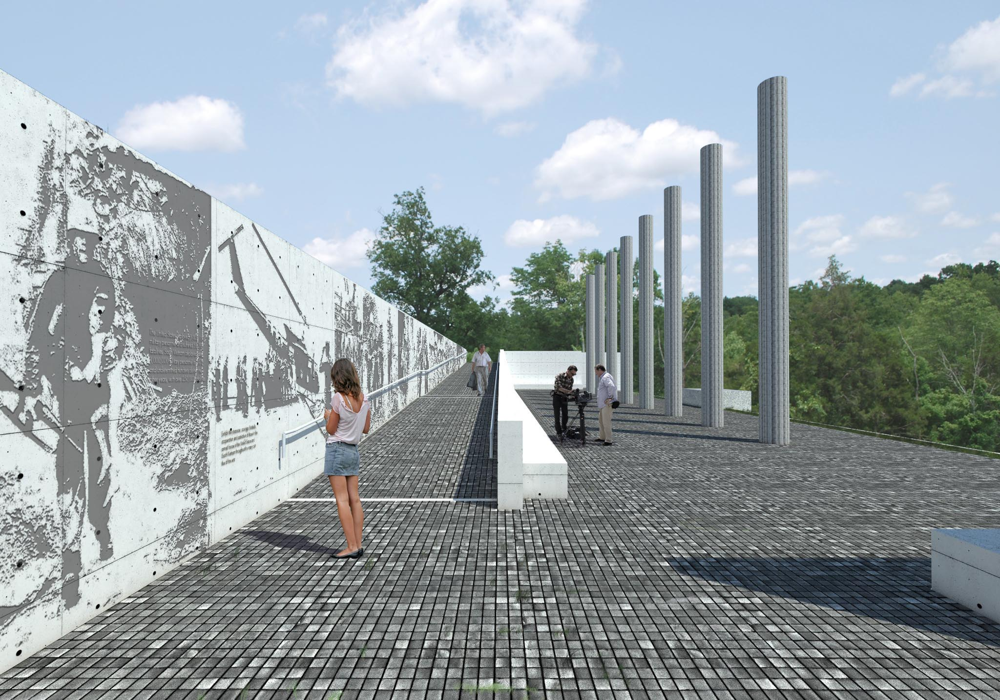

Tri Ân Monument Construction Begins
The city of Jeffersontown broke ground on a new monument honoring Vietnam War veterans. The Tri-An monument will recognize the sacrifices made.
Mesto Jeffersontown je začelo graditi nov spomenik v čast veteranom vietnamske vojne. Spomenik Tri-An bo priznal žrtve.

Jeffersontown Mayor Bill Dieruf and Louisville Mayor Greg Fischer joined local veterans for the ceremony at Veterans Memorial Park. “We left a piece of ourselves in Vietnam when we came back,” Retired Maj. Gen. Mike Davidson said. “But we brought back a piece of Vietnam with us, and it’s with us still every day in a very positive way.”
Župan Jeffersontowna Bill Dieruf in župan Louisvillea Greg Fischer sta se pridružila lokalnim veteranom na slovesnosti v Veterans Memorial Park. “Pustili smo kos sebe v Vietnamu, ko smo se vrnili,” je povedal upokojeni generalmajor Mike Davidson. “Prinesli smo kos Vietnama s seboj, ki je z nami še vedno vsak dan na zelo pozitiven način.”
Župan Jeffersontowna Bill Dieruf in župan Louisvillea Greg Fischer sta se pridružila lokalnim veteranom na slovesnosti v Veterans Memorial Park. “Pustili smo kos sebe v Vietnamu, ko smo se vrnili,” je povedal upokojeni generalmajor Mike Davidson. “Prinesli smo kos Vietnama s seboj, ki je z nami še vedno vsak dan na zelo pozitiven način.”
The monument was the idea of a group of community members led by Yung Nguyen, an immigrant from Vietnam. In January 2017, Grega Vezjak’s design was selected in an international competition. Over 128 entries from 29 countries participated, making it one of the top 10 architecture competitions worldwide in 2016.
Spomenik je bil zamisel skupine članov skupnosti, ki jo je vodil Yung Nguyen, priseljenec iz Vietnama. Januarja 2017 je bil projekt Grega Vezjaka izbran na mednarodnem natečaju. Več kot 128 prijav iz 29 držav je sodelovalo, kar je bilo med 10 največjih arhitekturnih natečajev na svetu leta 2016.
The winning design was selected through a vigorous process by a panel of judges to fulfill the criteria of creating a monument that is meaningful, unique, dramatic, and timeless. The design creates an environment that aids visitors in reflecting upon the triumphs and losses as well as the humanitarian efforts displayed during the war.
Zmagovalni projekt je bil izbran po strogi selekcijski proceduri s strani sodnicke komisije, da bi izpolnili kriterije za ustvarjanje spomenika, ki je smiseln, edinstven, dramaticen iniven. Oblikovanje ustvarja okolje, ki pomaga obiskovalcem razmislimiti o zmagah in izgubah ter humanitarnih naporih med vojno.
The monument will be made from granite sourced from South Vietnam. The pandemic and supply chain issues delayed shipments of the 270 tons of granite needed, but with the last 15 shipping containers recently arriving, construction is set to begin. The design features walls made from 36 solid granite blocks forming a half-entrenched courtyard.
Spomenik bo narejen iz granita iz Južnega Vietnama. Pandemija in težave s pogodbenimi verigami so zavlekle pošiljke 270 ton granita, toda z zadnjimi 15 transportnimi kontejnerji, ki so pred kratkim prispeli, je gradnja pripravljena za začetek. Dizajn ima stene iz 36 trdnih granitnih blokov, ki tvorijo pol-zakopano dvorišce.
